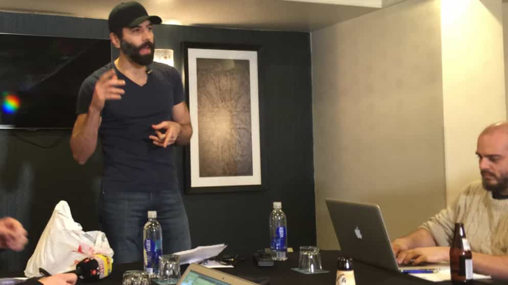

< < < Back
Huffington Post And Jesse Benn Are Getting Away With Endorsing Violence Against Patriots – Return Of Kings
…there’s an inherent value in forestalling Trump’s normalization. Violent resistance accomplishes this.
— Jesse Benn glorifying and justifying violence against the Trump campaign
The Huffington Post has sensationally allowed a liberal extremist, Jesse Benn, to advocate violence against Donald Trump and his supporters. Despite his comments, and the near certainty that a conservative saying the same things about stopping liberal campaigns would be arrested, Benn is yet to be questioned by authorities. Perhaps observers should be far from surprised; San Jose police have already been accused of letting thugs draped in Mexican flags attack Trump supporters recently. It may even be that police are concerned for their safety if they crack down fully on liberal violence.
Benn weirdly says that Donald Trump is not but still is a fascist. Using the fascist analogy, he implicitly compares Trump’s previous calls for the deportation of 11 million illegal immigrants with some sort of unspoken Nazi Einzatsgruppen operation or the mass deportations of Jews to extermination camps. The Einzatzgruppen were the special SS and other police task forces charged with killing Jews using firing squads and mobile gas vans before permanent extermination camps were fully established.
This vague conjuring up of the Holocaust (though he never explicitly mentions it or the Nazi forces behind it) is especially audacious for Benn, who is himself a Jew and should know better than to use ridiculous hyperbole about it. Whether he agrees with Trump is a very different matter from basically defaming those killed in World War II acts of genocide and trivializing their suffering with the lamest of equations.
Another lovely aspect of Benn’s piece is that he says Trump, for whom at least 40-50% of Americans will vote in November, espouses a politics so radical that it cannot be considered part of the normal US political spectrum. This essentially forms the crux of his reasoning as to why violence against the Trump campaign is “logical.” Violence is okay for Benn if you can apparently rationalize away why a group you do not like should be legitimate participants in the democratic process. It is a thoroughly self-serving and circular argument, not to mention one that involves the convenient infliction of violence upon your ideological enemies.
Finally, according to Benn, you should also suspend your critical thinking, most notably if you are a white male. You cannot understand the “oppression” of certain people, namely Mexicans, other minorities, and women, and if you can, you must still understand why they react with violence.
Our meet-ups this year were canceled after serious threats, but Jesse Benn is permitted to glorify violence with impunity

Roosh had to organize a secret press conference to avoid mass SJW violence but Jesse Benn gets a platform for calling for it.
This situation is both amusing and tragic for us here at Return Of Kings. Amusing because of the contrived liberal drama that more resembles a circus than reasoned debate. Tragic because our own supporters had to be protected from serious threats of violence earlier this year, leading to the cancellation of our planned global meet-ups. Vague but spurious allegations were made against us at that time, but the only documentable threats were made by our opponents.
Fast-forward a few months and an opinion columnist for a newspaper that makes a living off making allegations of violent threats against conservatives is openly advocating for violence against people they do not like. When will someone be arrested or at least served with a deterrent that prevents this from happening again?
The media silence over Benn’s calls is reprehensible, too. Just when I thought some outlets such as CNN were moderately improving their coverage of Mexican nationalist and general SJW violence, they fell away again and refused to even discuss the putrid pro-violence Huffington Post article. The only sites giving it real scrutiny are the so-called “extremist” platforms like Fox News, Breitbart and Mediaite.
And what happens when Trump groups start to defend themselves? Based on the present condoning or ignorance of liberal violence, mainstream media outlets will portray it as unjustified Trump supporter aggression, not the countermeasures of people legitimately fearful of their safety in environments where police are seemingly unable to protect them. People are going to get hurt as a result and the liberal establishment is largely to blame.
When will someone be arrested promptly for liberal violence or for calling for it?
The very definition of assault and false imprisonment.
After the footage of Mexican nationalists harassing and assaulting a woman went viral, suspects suddenly started being taken into custody. The speed of follow-up in San Jose was lax at best. It is time for proper resources to be devoted to preventing egregious acts of SJW political terrorism. I can understand police need to calm situations, but it is clear that they are either being restrained by political considerations above their heads or they need more feet on the ground at Trump rallies to stop leftist thuggery.
Jesse Benn must also be arrested by the authorities. His attempted demagoguery has no place in the United States. Inciting violence, last time I checked, is a crime. Nonetheless, it seems it is a crime created on inherently unequal terms in the modern political system. Say something liberals do not like and it is incitement to violence. When liberals actually preach violence, though, it is not incitement but “logic.”
When will the madness end?
Read More: Mexican Protesters Attack Trump Supporters In San Jose While Police Stand Down